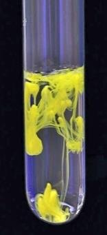
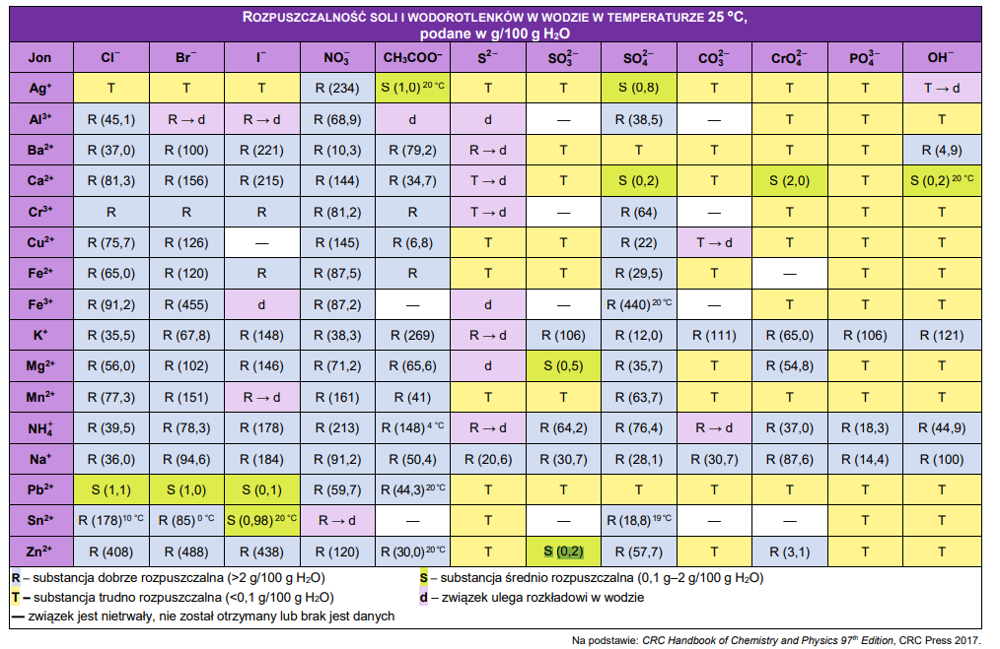
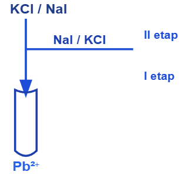

Iloczyn rozpuszczalności oznaczony jako \(K_{so},\ I_{R},\ K_{s}\). Zdefiniowany jest on jako stała rozpuszczalności cieżkorozpuszczalnych związków dysocjujących na jony. Jest to taka sama stała jak zawsze, a więc wszelkie metody obliczeniowe w tym wypadku działają (np. tabelka, przekora, zależność od temperatury, niezależność od wszystkich innych parametrów).
Na przykład dla soli \(A_{n}B_{m}\)
\[A_{n}B_{m} \rightleftarrows nA^{+} + m\ B^{-}\]
\(K_{so}\) jest zwyczajnie stałą reakcji – oczywiście za stężenie soli \(\lbrack A_{n}B_{m}\rbrack\) wstawiamy jeden – jest to ciało stałe.
\[K_{so} = \left\lbrack A^{+} \right\rbrack^{n}\left\lbrack B^{-} \right\rbrack^{m}\]
analizując bardzie rzeczywisty przykład \(Ca_{3}\left( PO_{4} \right)_{2}\)
\[Ca_{3}\left( PO_{4} \right)_{2} \rightleftarrows 3Ca^{2 +} + 2PO_{4}^{3 -}\]
Wyrażenie na \(K_{so}\) ma postać
\[K_{so} = \left\lbrack Ca^{2 +} \right\rbrack^{3}\left\lbrack PO_{4}^{3 -} \right\rbrack^{2}\]
Warunek spełniony równości spełniony jest dla nasyconych roztworów. Mówimy wówczas, że roztwór jest w równowadze z osadem, gdyż występuje wówczas zarówno sól rozpuszczona w roztworze jak i w osadzie, obie te formy soli przechodzą w siebie – jest to tzw. równowaga dynamiczna.
\(K_{so}\) jest ogólną stałą równowagi, więc wszystkie zależności, jak i metody obliczeniowe dotyczące stałej równowagi są spełnione. Możemy wykorzystywać niezależność wartości \(K_{so}\)od stężeń, ciśnień, regułę przekory oraz ewentualne metody tabelkowe do obliczeń. \(K_{So}\) analogicznie do \(K_{a},\ K_{b},\ K_{w}\) \(K_{so}\) to jest kolejna stałą równowagi, która poprostu ma nazwę.
Po czym poznajemy zadanie na \(K_{so}\)? Poznajemy po tym, że w zadaniu mamy powiedziane \(K_{so}\) albo mamy trudnorozpuszczalną sól, której \(K_{so}\) mamy w tablicach itp. Zadanie z \(K_{so}\) praktycznie zawsze musi wiązać się z obliczeniami. Charakterystycznym sformułowaniem występującym w zadaniu może być „trudnorozpuszczalne” oraz dla zadań w których musimy wykorzystać tablice powinno być napisane w temp „25°C”,
Ogólne wskazówki rozwiązywania zadań z \(K_{so}\):
Zawsze zapisz reakcje rozpuszczania związku ciężko rozpuszczalnego
\[Ca_{3}\left( PO_{4} \right)_{2} \rightleftarrows 3Ca^{2 +} + 2PO_{4}^{3 -}\]
Zawsze zapisz wyrażenie na \(K_{so}\)
\[K_{so} = \left\lbrack Ca^{2 +} \right\rbrack^{3}\left\lbrack PO_{4}^{3 -} \right\rbrack^{2}\]
Klasycznie omawiamy 3 typy zadań na \(K_{so}\) i większość zadań można rozdzielić na te typy, lub przynajmniej typy te występują jako składowe tego zadania:
W zadaniach tego typu nie mamy w roztworze żadnej substancji, która ma jon występujący w trudnorozpuszczalnej substancji. Bardzo często występuje w tych zadaniach określenie nasyconego roztworu w wodzie. Najprostsze zadanie tego typu:
Ile gramów \(Mg(OH)_{2}\) znajduje się w \(200ml\) nasyconego roztworu tego związku?
Zapisujemy reakcję rozpuszczania tegoż związku:
\[Mg(OH)_{2} \rightleftarrows Mg^{2 +} + 2OH^{-}\]
Dla przedstawionej reakcji możemy zrobić mini tabelkę:
| \[Mg(OH)_{2}\] | \[Mg^{2 +}\] | \[2OH^{-}\] | |
|---|---|---|---|
| \[\Delta c\] | \[- S\] | \[+ S\] | \[+ 2S\] |
| \[\Delta c_{K}\] | \[+ S\] | \[+ 2S\] |
Gdzie S jest współrzędną reakcji, analogiczną do \(x\). Oznaczenie \(S\) wzięło się od solubility – rozpuszczalności:
\[K_{so} = \left\lbrack Mg^{2 +} \right\rbrack\left\lbrack OH^{-} \right\rbrack^{2}\]
I \(S\) z tabelki wstawiamy do wyrażenia na \(K_{so}\) zamiast odpowiednich stężeń. Oczywiście równość tych S ze stężeniami wynika z braku obecności wspólnego jonu oraz stechiometrii reakcji rozpuszczania:
\[\left\lbrack Mg^{2 +} \right\rbrack = S\]
\[\left\lbrack OH^{-} \right\rbrack = 2\]
\[5.61*10^{- 12} = S*\left( \mathbf{2}\mathbf{S} \right)^{\mathbf{2}}\]
\[\mathbf{UWAGA\ K!@\#\$\ NA\ NAWIAS}\]
\[5.61*10^{- 12}\mathbf{=}4S^{3}\]
\[1.119*10^{- 4} = S\]
Znając wartość \(S\) mogę obliczyć stężenia:
\[\left\lbrack Mg^{2 +} \right\rbrack = S = 1.119*10^{- 4}\]
\[\left\lbrack OH^{-} \right\rbrack = 2S = 2.238*10^{- 4}\]
Stężenie rozpuszczonego wodorotlenku równe będzie \(S\)
\[\left\lbrack Mg(OH)_{2} \right\rbrack = S = 1.119*10^{- 4}\]
Znając stężenie i objętość roztworu możemy obliczyć ile moli \(Mg(OH)_{2}\) się rozpuściło.
\[n_{Mg(OH)_{2}} = cV = 1.119*10^{- 4}*0.2 = 0.2238*10^{- 4}\]
Z czego bardzo łatwo obliczyć masę rozpuszczonego związku:
\[m_{Mg(OH)_{2}} = nM = 0.2238*10^{- 4}*(24.3 + 17*2) = 13.04*10^{- 4} = 0.0013g\]
Z obliczonych wartości łatwo obliczyć inne rzeczy jak np. pH nasyconego roztworu tego wodorotlenku w temperaturze 25°C
\[pOH = - \log\left\lbrack OH^{-} \right\rbrack = - \log(2.238*10^{- 4}) = 3.65\]
Wówczas pH
\[pH = pK_{W} - pOH = 14 - 3.65 = 10.35\]
Analogicznym, ale odwróconym zadaniem jest:
100 ml roztworu nasyconego \(Co(OH)_{2}\) zawiera 0.0744 mg tego związku. Ile wynosi wartość \(K_{so}\) tego związku?
Zapisuję reakcję rozpuszczania
\[Co(OH)_{2} \rightarrow Co^{2 +} + 2OH^{-}\]
Następnie zapisuję wyrażenie na \(K_{so}\):
\[K_{so} = \left\lbrack Co^{2 +} \right\rbrack\left\lbrack OH^{-} \right\rbrack^{2}\]
Obliczam mole rozpuszczonego \(Co(OH)_{2}\)
\[n_{Co(OH)_{2}} = \frac{0.0744*10^{- 3}}{58.93 + 2*17} = 8*10^{- 7}\]
Wiążę ilość moli jonów \(Co^{2 +}\ i\ OH^{-}\) z rozpuszczonym \(Co(OH)_{2}\), oraz obliczam stężenia rozpuszczonych jonów:
\[n_{Co^{2 +}} = n_{Co(OH)_{2}} = 8*10^{- 7} \rightarrow \left\lbrack Co^{2 +} \right\rbrack = \frac{8*10^{- 7}}{0.1} = 8*10^{- 6}\]
\[n_{OH^{-}} = 2*8*10^{- 7} = 16*10^{- 7} \rightarrow \left\lbrack OH^{-} \right\rbrack = \frac{16*10^{- 7}}{0.1} = 16*10^{- 6}\]
Obliczone stężenia podkładam w wyrażenie na \(K_{so}\):
\[K_{so} = \left\lbrack Co^{2 +} \right\rbrack\left\lbrack OH^{-} \right\rbrack^{2} = 8*10^{- 6}*\left( 16*10^{- 6} \right)^{2} = 2\ 048*10^{- 18} = 2.05*10^{- 15}\]
Zadaniem maturalnym, w którym występuje typ zadań – brak wspólnego jonu jest zadanie:
W kolbie umieszczono 1.0 g tlenku wapnia, dodano \(100\ cm^{3}\) wody, wymieszano i kolbę zamkniętą korkiem pozostawiono na kilka godzin. Następnie pobrano trochę roztworu i w temperaturze 25°C zmierzono jego pH. Po pewnym czasie pomiar powtórzono, ale wartość pH nie zmieniła się i wynosiła 12.33. Przyjęto, że cały tlenek wapnia przereagował zgodnie z równaniem:
\[CaO\ + \ H_{2}O\ \rightarrow \ Ca(OH)_{2}\]
i ustaliła się równowaga między fazą stałą a roztworem:
\[Ca(OH)_{2}\ \rightleftarrows \ Ca^{2 +}\ + \ 2OH^{-}\]
Oblicz wartość iloczynu rozpuszczalności (Ks) wodorotlenku wapnia w warunkach doświadczenia
Zadanie rozpoczynamy od zapisania wyrażenia na \(K_{SO}^{Ca(OH)_{2}}\)
\[K_{so} = \left\lbrack Ca^{2 +} \right\rbrack\left\lbrack OH^{-} \right\rbrack^{2}\]
Mamy podaną wartość \(pH\), więc możemy obliczyć \(pOH\) z tego stężenie jonów \(OH^{-}\)
\[pOH = 14 - 12.33 \rightarrow\]
\[pOH = 1.67 \rightarrow \left\lbrack OH^{-} \right\rbrack = 20^{- 1.67} = 0.0214\]
Z tabelki mogę łatwo obliczyć stężenie jonów \(Ca^{2 +}\)
| \[Ca(OH)_{2}\] | \[Ca^{2 +}\] | \[OH^{-}\] | |
|---|---|---|---|
| \[c^{0}\] | \[0\] | \[0\] | |
| \[dc\] | \[- S\] | \[+ S\] | \[+ 2s\] |
| \[c^{k}\] | \[S\] \[S = 0.0107\] |
\[2s = 0.0214\] |
Wstawienie wartości stężeń do \(K_{so}\) umożliwia obliczenie tej wartości:
\[K_{so} = \left\lbrack Ca^{2 +} \right\rbrack\left\lbrack OH^{-} \right\rbrack^{2}\]
\[K_{so} = 0.0107*{0.0214}^{2} = 4.9*10^{- 6}\]
Można zadać pytanie, dlaczego w zadaniu podali nam, że mamy 1 gram \(CaO\). Ten jeden gram jest po to, żeby jednoznacznie powiedzieć, że mamy użyliśmy tego związku w nadmiarze:
Ilość początkowa moli \(CaO\) wynosi
\[n_{CaO}^{0} = \frac{1}{56} = 0.0179\]
I ta ilość moli jest równa całkowitemu \(Ca(OH)_{2}\)
Z kolei ilość \(Ca(OH)_{2}\) rozpuszczona jest równa
\[n_{Ca(OH)_{2}}^{rozp} = SV = 0.0107*0.1 = 0.00107\]
Jednoznacznie, więc ilość moli \(Ca(OH)_{2}\) rozpuszczona jest mniejsza niż całkowita użyta \(Ca(OH)_{2}\)
Zadania te rozpoznajemy po tym, iż są to układy, w których mamy ciężko rozpuszczalny związek rozpuszczany w roztworze, który zawiera już jony pochodzące również z trudnorozpuszczalnego związku. Przykładem jest roztwór soli, która zawierający już ten sam jon co ta ciężko rozpuszczalna sól. Mamy wówczas dwa źródła jednego z jonów – a więc jon ten jest „wspólnym” jonem dla obu soli.
Klasycznym przykładem zadania z wspólnym jonem jest:
Stężenie soli \(CaSO_{4}\ \) w roztworze wynosi \(0.001\ mol*dm^{- 3}\). Ile gramów \(Ca_{3}\left( PO_{4} \right)_{2}\) rozpuści się w \(500\ cm^{3}\) tego roztworu. Temperatura wynosiła 25°C
Układ ten jest układem, w którym występuje wspólny jon – \(SO_{4}^{2 -}\), co widzimy po napisaniu równań dysocjacji:
\[CaSO_{4} \rightarrow Ca^{2 +} + SO_{4}^{2 -}\]
\[Ca_{3}\left( PO_{4} \right)_{2} \rightleftarrows 3Ca^{2 +} + 2PO_{4}^{3 -}\]
Wyrażenie na \(K_{so}\) ma postać
\[K_{so} = \left\lbrack Ca^{2 +} \right\rbrack^{3}\left\lbrack PO_{4}^{3 -} \right\rbrack^{2}\]
Natomiast jej wartość wynosi:
\[K_{so} = 2.07*10^{- 33}\]
I tutaj już z racji na znajomość początkowego stężenie jednego z jonów możemy zrobić klasyczną tabelkę:
| \[Ca_{3}\left( PO_{4} \right)_{2}\] | \[Ca^{2 +}\] | \[PO_{4}^{3 -}\] | |
|---|---|---|---|
| \[c^{0}\] | \[0.001\ \] | ||
| \[\Delta c\] | \[- S\] | \[+ 3S\] | \[+ 2S\] |
| \[c^{k}\] | \[0.001 + 3S\] | \[+ 2S\] |
Wydaje się że wstawienie tych stężeń do wyrażenia na \(K_{so}\) powinno dać rozwiązanie
\[K_{so} = \left\lbrack Ca^{2 +} \right\rbrack^{3}\left\lbrack PO_{4}^{3 -} \right\rbrack^{2}\]
\[2.07*10^{- 33} = {(0.001 + 3S)}^{3}{*(2S)}^{2}\]
Jednak otrzymujemy duży problem i nazywa się on równanie 5. stopnia. Może ten problem rozwiązać przy użyciu kalkulatora z rozwiązywaniem układów równań (np. Casio fx-991, nie, nie płacą mi niestety) albo uproszczeniem.
Popełnienie uproszczenia jest wymaga szacowania. Iloczyn rozpuszczalności nie ma dużej wartością liczbowej, co znaczy, że niewiele soli powinno się rozpuścić. W takim razie wartość liczbowa \(S\) będzie bardzo mała, a więc dodanie bardzo małej wartości przy obliczaniu stężenia jonów \(Ca^{2 +}\) nie zmienia wartości początkowej \(0.001 + 3S \approx 0.001\). np. jeżeli ta \(S\) będzie miała wartość około \(10^{- 7}\) praktycznie nie zmienia wartości \(0.001 + 3*10^{- 7} \approx 0.001\)
Najczęściej spotykane przybliżenie w układzie ze wspólnym jonem → wspólny jon pochodzi
Najpewniej w przypadku zadania maturalnego napisane w treści zadania będzie: załóż, że stężenie jonu „ wspólnego” pochodzi tylko z dobrze rozpuszczalnej substancji.
W rozważanym zadaniu to przybliżenie daje:
| \[Ca_{3}\left( PO_{4} \right)_{2}\] | \[Ca^{2 +}\] | \[PO_{4}^{3 -}\] | |
|---|---|---|---|
| \[c^{0}\] | \[0.001\ \] | ||
| \[\Delta c\] | \[- S\] | \[+ 3S\] | \[+ 2S\] |
| \[c^{k}\] | \[\mathbf{0.001 + 3}\mathbf{S \approx}\mathbf{0.001}\] Przybliżenie wspólnego jonu |
\[+ 2S\] |
Co po wstawieniu do wyrażenia na \(K_{So}\) dostajemy równanie, które jesteśmy w stanie rozwiązać zwykłym kalkulatorem:
\[2.07*10^{- 33} = {(0.001)}^{3}{*(2S)}^{2}\]
\[2.07*10^{- 33} = 10^{- 9}*4S^{2}\]
\[S = 7.19*10^{- 13}\]
Oczywiście warto jest zobaczyć, czy obliczona wartość \(S\) nie zmienia stężenia współnego jonu:
\[0.001 + 3*7.19*10^{- 13} \approx 0.001\]
A więc podjęte przybliżenie było słuszne.
I teraz znając wartość rozpuszczalności \(S\) możemy obliczyć ilość moli rozpuszczonej soli, a z tego jej masę.
\[n_{\ Ca_{3}\left( PO_{4} \right)_{2}} = cV = 0.5*7.19*10^{- 13} = 3.595*10^{- 13}\]
\[m_{Ca_{3}\left( PO_{4} \right)_{2}} = nM =\]
To przybliżenie sprawdzamy porównując uzyskaną wartość rozpuszczalności \(S\) stężenia dobrze rozpuszczalnej soli. Jeżeli stężenie pochodzące z trudno rozpuszczalnej soli jest znacznie mniejsze niż z dobrze rozpuszczalnej popełnione założenie jest poprawne.
Ten typ zadań może być połączony z zadaniami związanymi z \(\left\lbrack OH^{-} \right\rbrack;\left\lbrack H^{+} \right\rbrack;pH;pOH\), np.:
Jakie powinno być pH roztworu \(FeCl_{3}\) o stężeniu \(0.001\ mol*dm^{- 3}\), aby nie wytrącił się osad \(Fe(OH)_{3}\).
W tablicach znajdujemy wartość iloczynu rozpuszczalności \(Fe(OH)_{3}\):
\[K_{so}^{Fe(OH)_{3}} = 2.79*10^{- 39}\]
Zapisujemy reakcję dysocjacji \(Fe(OH)_{3}\) i wyrażenie na jego \(K_{so}\):
\[Fe(OH)_{3} \rightleftarrows Fe^{3 +} + 3OH^{-}\]
\[K_{So} = \left\lbrack Fe^{3 +} \right\rbrack\left\lbrack OH^{-} \right\rbrack^{3}\]
Czyli tutaj mamy ustalone stężenie \(Fe^{3 +}\), jest ono równe początkowemu stężeniu soli, a więc możemy obliczyć stężenie jonów \(\lbrack OH^{-}\rbrack\):
\[2.79*10^{- 39} = 0.001\left\lbrack OH^{-} \right\rbrack^{3}\]
\[\left\lbrack OH^{-} \right\rbrack = 1.41*10^{- 12}\]
Znając wartość stężenia jonów \(OH^{-}\) mogę obliczyć \(pOH\), a z tego \(pH\):
\[\left\lbrack OH^{-} \right\rbrack \rightarrow pOH \rightarrow pH\]
\[pOH = - \log\left\lbrack OH^{-} \right\rbrack = - \log{1.41*10^{- 12} = 11.85}\]
Wówczas
\[pH = 14 - pOH = 14 - 11.85 = 2.15\]
Zadania te mogą być połączone np. z zadaniami pierwszego typu
Oblicz ile razy rozpuszczalność molowa \(BaSO_{4}\) jest większa w czystej wodzie niż nasyconym roztworze \(Ag_{2}SO_{4}\). Roztwory są w temp. 25°C
Fragment opisany w czystej wodzie jest zadaniem I typu, nie ma innego jonu, a więc wspólnego też nie będzie. Reakcja dysocjacji ma postać:
\[BaSO_{4} \rightleftarrows Ba^{2 +} + SO_{4}^{2 -}\]
A więc wyrażenie na \(K_{so}\):
\[K_{So} = \left\lbrack Ba^{2 +} \right\rbrack\left\lbrack SO_{4}^{2 -} \right\rbrack\]
Odnajdując wartość \(K_{so}\) w tablicach:
\[1.08*10^{- 10} = S^{2} \rightarrow S = 1.039*10^{- 5}\]
W roztworze drugim mamy dwa etapy rozwiązywania. Na początku, aby obliczyć stężenie rozpuszczonego \(Ag_{2}SO_{4}\) oraz stężenie jonów \(\lbrack SO_{4}^{2 -}\rbrack\) używamy pierwszego typu zadania. Kolejno, używam drugiego typu zadania, czyli zadania, w którym wspólnym jonem jest \(SO_{4}^{2 -}\)
Na początku rozpisuje dysocjację soli, wraz z mini tabelką
\[Ag_{2}SO_{4} \rightleftarrows 2Ag^{+} + SO_{4}^{2 -}\]
\[- S\ \ \ \ \ \ \ \ \ \ \ \ \ \ \ \ \ + 2S\ \ \ \ \ \ \ \ \ + S\]
Wyrażenie na \(K_{So}\) ma postać:
\[K_{so} = \left\lbrack Ag^{+} \right\rbrack^{2}\left\lbrack SO_{4}^{2 -} \right\rbrack\]
Po wstawieniu wartości z tabeli CKE oraz mini tabelki otrzymuję:
\[1.2*10^{- 5} = (2S)^{2}S\]
\[S^{3} = 0.3*10^{- 5} = 3*10^{- 6}\]
\[S = 0.0144 = \lbrack SO_{4}^{2 -}\rbrack\]
Znając S znamy również stężenie \(SO_{4}^{2 -}\) z \(Ag_{2}SO_{4}\). W naszym przypadku poza reakcją dysocjacji \(Ag_{2}SO_{4}\) zachodzi również reakcja dysocjacji
\[BaSO_{4} \rightleftarrows Ba^{2 +} + SO_{4}^{2 -}\]
Jednak stosując przybliżenie wspólnego jonu, możemy powiedzieć, że „wspólne” jony –\(SO_{4}^{2 -}\) pochodzą tylko z dysocjacji lepiej rozpuszczalnej substancji, a więc \(Ag_{2}SO_{4}\). Wstawiając do wyrażenia na \(K_{so}^{BaSO_{4}}\) dostajemy:
\[BaSO_{4} \rightarrow Ba^{2 +} + SO_{4}^{2 -}\]
\[K_{So} = \left\lbrack Ba^{2 +} \right\rbrack\left\lbrack SO_{4}^{2 -} \right\rbrack\]
Jeżeli stężenie \(\lbrack SO_{4}^{2 -}\rbrack\) pochodzi tylko z dysocjacji \(Ag_{2}SO_{4}\) wówczas \(\left\lbrack SO_{4}^{2 -} \right\rbrack = \ 0.0144\):
\[1.08*10^{- 10} = \left\lbrack Ba^{2 +} \right\rbrack 0.0144\]
\[\left\lbrack Ba^{2 +} \right\rbrack = 7.5*10^{- 9}\]
Wartość ta jest równa rozpuszczalności \(BaSO_{4}\) w tym roztworze.
I jak widać to obliczone dodatkowe stężenie jonów baru nie zmieniło rzeczywistego stężenia \(\lbrack SO_{4}^{2 -}\rbrack\)
\[\ \left\lbrack SO_{4}^{2 -} \right\rbrack = 0.0144 + 7.5*10^{- 9} = 0.0144\]
Tutaj można byłoby rozwiązać to też równaniem kwadratowym, jeżeli obawiamy się się przybliżenia wspólnego jonu:
| \[BaSO_{4}\] | \[Ba^{2 +}\] | \[SO_{4}^{2 -}\] | |
|---|---|---|---|
| \[0\] | \[0.0144\] | ||
| \[- S\] | \[+ S\] | \[+ S\] | |
| \[+ S\] | \[0.0144 + S\] |
Co po wstawieniu do wyrażenia na \(K_{so}\) daje równanie kwadratowe:
\[K_{so} = S(0.0144 + S) = 1.08*10^{- 10}\]
Rozwiązaniem jest wartość rozpuszczalności tej soli:
\[S = 7.5*10^{- 9},\ druga\ ujemna.\]
Ten typ zadania rozpoznajemy po pytaniu: czy wytrąci się osad. Najłatwiej jest zrobić tego typu zadanie posługując się iloczynem jonowym \(Q\) po
3. typ Czy wytrąci osad soli trudno rozpuszczalnego związku po zmieszaniu dwóch roztworów zwiazków. Robimy ten typ zadań właściwie iloczynem jonowym \(Q\) - czyli analogicznym wyrażeniem do stałej \(K_{So}\), jednak wstawiamy do niego stężenia odpowiednich jonów po zmieszaniu. NALEŻY Z CAŁĄ PEWNOŚCIĄ POWIEDZIEĆ, IŻ NALEŻY WSTAWIAĆ STĘŻENIA PO ZMNIESZANIU DWÓCH ROZTWORÓW I BĘDĄ ONE INNE NIŻ PRZED ZMIESZANIEM – ANALOGICZNIE DO WHISKI I COLI – STĘŻENIE ALKOHOLU SPADA PODCZAS ROZCIEŃCZANIA Colą.
Rozpatrzmy zadanie:
Do \(50ml\) \(BaCl_{2}\) dodano \(2ml\) roztworu \(H_{2}SO_{4}\). Czy strąci się osad jeżeli oba stężenia zmieszanych roztworów wynosiły 0.01 \(\frac{mol}{dm^{3}}\)?
Na początku musimy w ogóle ustalić, jakie związki mogą się strącić –związki te będziemy otrzymywać nijako przez sprawdzenie wszystkich kombinacji dostępnych kationów i anionów. W analizowanym zadaniu dostępne jony to:
\[H_{2}SO_{4} \rightarrow 2H^{+} + SO_{4}^{2 -}\]
\[BaCl_{2} \rightarrow Ba^{2 +} + 2Cl^{-}\]
W takim razie dostępne możliwe związki to:
\[BaSO_{4}\ i\ HCl\]
Kolejno sprawdzamy ich obecność w tablicy rozpuszczalności, odnajdujemy tam \(BaSO_{4}\) i spisujemy jego wartość \(K_{So}\):
\[K_{So}^{BaSO_{4}} = 1.08*10^{- 10}\]
Zapisuję reakcję rozpuszczania tego związku
\[BaSO_{4} \rightleftarrows Ba^{2 +} + SO_{4}^{2 -}\]
Oraz na jego iloczyn rozpuszczalności
\[K_{so} = \left\lbrack Ba^{2 +} \right\rbrack\left\lbrack SO_{4}^{2 -} \right\rbrack\]
Widzę, iż potrzebuję rzeczywistego stężenia PO zmieszaniu dwóch roztworów dla jonów \(\mathbf{B}\mathbf{a}^{\mathbf{2 +}}\) i \(\mathbf{S}\mathbf{O}_{\mathbf{4}}^{\mathbf{2 -}}\)
Oczywiście zmieszanie dwóch roztworów powoduje zmianę ich stężenia. Najłatwiej jest obliczyć mole odpowiednich jonów
\[n_{Ba^{2 +}} = n_{BaCl_{2}} = 0.05*0.01 = 5*10^{- 4}\]
\[n_{SO_{4}^{2 -}} = n_{H_{2}SO_{4}} = 0.002*0.01 = 2*10^{- 5}\]
Następnie obliczyć objętość całkowitą:
\[V_{sum} = 0.05 + 0.002 = 0.052\]
I potem stężenia:
\[\left\lbrack Ba^{2 +} \right\rbrack_{po} = \frac{5*10^{- 4}}{0.052} = 0.96*10^{- 2}\]
\[\left\lbrack SO_{4}^{2 -} \right\rbrack^{po} = \frac{2*10^{- 5}}{0.052} = 0.38*10^{- 3}\]
I teraz porównujemy jaki jest rzeczywisty iloczyn jonowy jonów (\(Q_{so}\)) dal stężeń po zmieszaniu wobec stablicowanego \(K_{so}\)
\[K_{so} = ? = Q_{So}\]
\[K_{so} = ? = \left\lbrack Ba^{2 +} \right\rbrack^{po}\left\lbrack SO_{4}^{2 -} \right\rbrack^{po}\]
\[1.08*10^{- 10} = ? = 0.96*10^{- 2}*0.38*10^{- 3}\]
\[1.08*10^{- 10} \ll 0.96*10^{- 2}*0.38*10^{- 3}\]
\[K_{so} \ll Q_{So}\]
W analizowanym przypadku obliczona wartość \(Q_{so}\) jest większa od \(K_{so},\) to znaczy, że w roztworze jest za dużo jonów, a więc osad wytrąci się.
Jeżeli z kolei wartości te są sobie równe, tzn. \(K_{So} = Q_{So}\) wówczas mamy roztwór nasycony, ale wiecej już nie rozpuścimy
Jeżeli natomiast \(K_{so} \gg Q_{So}\) roztwór jest nienasycony, mamy za mało jonów.
Jeżeli będziesz miał podany stosunek objętości dodanych roztworów to sobie załóż jakąś objętość tak aby było wygodnie liczyć
Zadaniem maturalnym, w którym zadano pytanie o wytrącenie osadu jest na przykład:
Większość soli potasu jest dobrze lub bardzo dobrze rozpuszczalna w wodzie. Jedną z nielicznych soli potasu słabo rozpuszczalnych w wodzie jest chloran(VII) potasu. Iloczyn rozpuszczalności tej soli, w temperaturze 20°C, wynosi \(K_{S}^{KClO_{4}} = \ 1.05\ \cdot \ 10^{–2}\). Z tego powodu aniony chloranowe(VII) są odczynnikiem stosowanym w jakościowej analizie chemicznej do wykrywania obecności kationów potasu. Pojawienie się białego osadu, po dodaniu do badanego roztworu kilku cm3 nasyconego roztworu chloranu(VII) sodu, świadczy o obecności kationów potasu w tym roztworze:
\[\ K^{+} + \ ClO_{4}^{-}\ \ \longrightarrow \ KClO_{4} \downarrow\]
Rozpuszczalności chloranu(VII) sodu w wodzie, w temperaturze 20°C, wynosi \(R_{NaClO_{4}}\)= 205.0 g na 100 g \(H_{2}O\) , a gęstość nasyconego roztworu tej soli w temperaturze 20°C wynosi \(d_{r.nas.}^{NaClO_{4}}\ = \ 1.58\ g \bullet cm^{–3}\). Rozstrzygnij, czy dodanie \(2.00\ cm^{3}\) nasyconego (w temperaturze 20°C) roztworu chloranu(VII) sodu do \(15.00\ cm^{3}\) roztworu chlorku potasu o stężeniu molowym równym \(0.020\ mol\ \bullet \ dm^{–3}\) spowoduje, że wytrąci się osad chloranu(VII) potasu. Załóż, że objętość otrzymanej mieszaniny jest sumą objętości roztworów przed zmieszaniem. Odpowiedź uzasadnij odpowiednimi obliczeniami.
Zadanie rozpoczynamy od napisania równania dysocjacji strącanej soli i wyrażenia na \(K_{so}\)
\[KClO_{4} \rightleftarrows K^{+} + ClO_{4}^{-}\]
\[K_{so} = \left\lbrack K^{+} \right\rbrack\lbrack ClO_{4}^{-}\rbrack\]
Potrzebujemy w takim razie stężenia jonów \(ClO_{4}^{-}\) i \(K^{+}\). Masę roztworu zawierającego joy \(ClO_{4}^{-}\) mogę obliczyć z objętości roztworu \(V_{NaClO_{4}}^{r}\) i gęstości:
\[V_{NaClO_{4}}^{r} = 0.002 = 2cm^{3} \rightarrow m_{NaClO_{4}}^{r} = d^{r}V^{r} = 2*1.58 = 3.16g\]
Znając masę roztworu \(NaClO_{4}\) - \(m_{NaClO_{4}}^{r}\) mogę obliczyć masę tej soli w tym roztworze wykorzystując potrójną proporcję i rozpuszczalność:
\[NaClO_{4} - - - H_{2}O - - - RR\]
\[205 - - - 100 - - - 305\]
\[m_{NaClO_{4}} - - - m_{H_{2}O} - - - 3.16\]
\[m_{NaClO_{4}} = \frac{205*3.16}{305} = 2.124g\]
Znając masę mogę przeliczyć na mole, ich ilość jest równa ilości moli jonów \(ClO_{4}^{-}\):
\[n_{NaClO_{4}} = \frac{2.124}{23 + 35.5 + 64} = 0.01734 = n_{ClO_{4}^{-}}\]
Potrzebuję również ilości moli jonów potasowych – tutaj jest znacznie łatwiej – jest to iloczyn stężenia i objętości roztworu \(KCl\):
\[n_{KCl} = n_{K^{+}} = cV = 0.015*0.02 = 0.0003\]
Objętość sumaryczna jest sumą objętości roztworów \(KCl\) i \(NaClO_{4}\):
\[V_{sum} = 0.015 + 0.002 = 0.017\]
Stężenie interesujących nas jonów po zmieszaniu wynoszą:
\[\left\lbrack K^{+} \right\rbrack = \frac{0.0003}{0.017} = 0.01765\]
\[\left\lbrack ClO_{4}^{-} \right\rbrack = \frac{0.01734}{0.017} = 1.02\]
Następnie porównujemy wartości \(Q_{so}\) do \(K_{so}\)
\[K_{so} = ? = Q_{so}\]
\[K_{so} = ? = \left\lbrack K^{+} \right\rbrack\left\lbrack ClO_{4}^{-} \right\rbrack\]
\[1.05*10^{- 2} = ? = 0.01765*1.02\]
\[0.0105 = ? = 0.018\]
Czyli \(Q_{so} > K_{so}\) osad się wytrąci
Zadanie to można skomplikować bardziej:
Jaka będzie masa tego wytrąconego osadu?
Zadanie rozpoczynamy od zrobienia tabelki. Podczas procesu wytrącania się osadu zachodzi reakcja:
\[K^{+} + ClO_{4}^{-} \rightarrow KClO_{4}\]
| \[K^{+}\] | \[ClO_{4}^{-}\] | \[KClO_{4}\] | |
|---|---|---|---|
| \[c^{0}\] | \[0.01765\] | \[1.02\] | |
| \[\Delta c\] | \[- x\] | \[- x\] | \[+ x\] |
| \[c^{k}\] | \[0.01765 - x\] | \[1.02 - x\] | \[+ x\] |
Stężenia końcowe jonów muszą spełnić warunek nasycenia – czyli ich iloczyn musi być równy \(K_{so}\).
\[\left\lbrack K^{+} \right\rbrack\left\lbrack ClO_{4}^{-} \right\rbrack = K_{so}^{KClO_{4}}\]
\[(0.01765 - x)(1.02 - x) = 1.05*10^{- 2}\]
Po rozwiązaniu równania kwadratowego dostajemy:
\[x = 0.00728\]
Wartość ta jest dość hipotetycznym tworem – stężeniem \(KClO_{4}\), który ulega wytrąceniu. Znając objętość sumaryczną – końcową roztworu możemy obliczyć mole wytrąconego \(KClO_{4}\)
\[n_{KClO_{4}} = cV = 0.00728*0.017 = 0.000124\]
A następnie jego masę:
\[m = nM\]
Przeliczanie stężeń w zadaniach z \(K_{so}\) może być bardzo upierdliwe i trzeba się czasem mocno zastanowić, o które stężenie w danym momencie chodzi. Przykładem jest zadanie:
Chlorek, bromek i jodek ołowiu(II) są solami trudno rozpuszczalnymi w wodzie. Chlorek i bromek mają barwę białą, a jodek jest żółty. Do \(5.0\ cm^{3}\) nasyconego roztworu chlorku ołowiu(II) dodano \(2.5\ cm^{3}\) roztworu pewnej soli i zaobserwowano efekt pokazany na zdjęciu.

Spośród poniższych soli wybierz tę, której roztwór mógł być użyty w tym doświadczeniu, i zaznacz jej wzór. Oblicz, jakie powinno być minimalne stężenie molowe użytego roztworu tej soli, żeby wystąpił zaobserwowany efekt:
\[NaCl;\ AgI;\ KBr;\ NaI;\ Pb\left( NO_{3} \right)_{2}\]
Osad jest żółty musieliśmy więc dodać jodków. Do wyboru mamy jodek srebra i jodek sodu. To co dodawaliśmy powinno być w roztworze, a więc powinno być raczej dobrze rozpuszczalne, a więc wybieramy sól sodową: \(NaI\)
Kolejno rozbijam elementy składowe zadania. „Do \(5.0\ cm^{3}\) nasyconego roztworu chlorku ołowiu(II)” z tej informacji jestem w stanie obliczyć stężenie jonów ołowiu.
Reakcja dysocjacji \(PbCl_{2}\) wygląda następująco:
\[PbCl_{2} \rightarrow Pb^{2 +} + 2Cl^{-}\]
\[- S\ \ \ \ \ \ \ \ + S\ \ \ \ \ \ + 2S\]
Wyrażenie na \(K_{So}\) tej soli to:
\[K_{so} = \left\lbrack Pb^{2 +} \right\rbrack\left\lbrack Cl^{-} \right\rbrack^{2}\]
Odczytując wartość \(K_{so}\) i wstawiając zależności jonów od rozpuszczalności \(S\) dostajemy:
\[1.7*10^{- 5} = S*(2S)^{2}\]
Obliczamy wartość \(S\):
\[1.7*10^{- 5} = 4S^{3}\]
\[0.425*10^{- 5} = S^{3}\]
\[S = 0.0162\]
Co po wstawieniu daje nam wartości stężeń jonów:
\[\left\lbrack Pb^{2 +} \right\rbrack = S = 0.0162\]
\[\left\lbrack Cl^{-} \right\rbrack = 2S = 0.0324\]
Dodając jonów \(I^{-}\) z roztworu \(NaI\) zmieniam również stężenie \(Pb^{2 +}\), gdyż rozcieńczam roztwór jonów \(Pb^{2 +}\) przez dodanie dodatkowej porcji roztworu II. Analogicznie dodając coli do wódki zmniejsza mi się stężenie alkoholu w drinku. Dlatego najlepszy drink do wódka z szklanką. Aby uwzględnić to rozcieńczenie obliczam ilość moli jonów \(Pb^{2 +}\):
\[n_{Pb^{2 +}} = cV = 0.0162*5*10^{- 3} = 0.081*10^{- 3}\]
I potem stężenie po dodaniu:
\[\left\lbrack Pb^{2 +} \right\rbrack_{po} = \frac{n_{Pb^{2 +}}}{V_{sum}} = \frac{0.081*10^{- 3}}{5*10^{- 3} + 2.5*10^{- 3}} = 0.0108\frac{mol}{dm^{3}}\]
Dopiero tą wartość stężenia \(Pb^{2 +}\) będę używał do obliczeń jonów jodkowych z \(K_{So}^{PbI_{2}}\) Dla roztworu nasyconego \(PbI_{2}\) mogę zapisać, że zachodzi proces opisany równaniem:
\[PbI_{2} \rightleftarrows Pb^{2 +} + 2I^{-}\]
Którego stałą równowagi mogę zapisać, jako
\[K_{so} = \left\lbrack Pb^{2 +} \right\rbrack\left\lbrack I^{-} \right\rbrack^{2}\]
Oczywiście stała dotyczy stężeń w roztworze po zmieszaniu dwóch roztworów:
\[9.8*10^{- 9} = \left\lbrack Pb^{2 +} \right\rbrack_{po}\left\lbrack I^{-} \right\rbrack_{po}^{2}\]
\[9.8*10^{- 9} = 0.0108*\left\lbrack I^{-} \right\rbrack_{po}^{2}\]
\[\left\lbrack I^{-} \right\rbrack_{po} = 0.000953\]
Obliczone stężenie jonów jodkowych to również jest stężenie po zmieszaniu dwóch roztworów – stan równowagi ustalił się dopiero po ich zmieszaniu.
Czyli należy to przeliczyć to stężenie na stężenie przed zmieszaniem należy obliczyć mole jonów jodkowych. Używam do obliczenia moli objętości sumarycznej obu roztworów\(V = 0.005 + 0.0025 = 0.0075\)
\[n_{I^{-}} = cV = 0.000953*0.0075 = 7.15*10^{- 6}\]
A uzyskaną ilość moli dzielę przez objętość dodanego roztworu
\[\lbrack NaI\rbrack = \left\lbrack I^{-} \right\rbrack_{przed} = \frac{n}{V} = \frac{7.15*10^{- 6}}{2.5*10^{- 3}} = 0.00286\frac{mol}{dm^{3}}\]
Analogicznym zadaniem jest zadanie z matury WCHUJ:
W szeregu \(AgC,\ AgBr,\ AgI\) maleje rozpuszczalność wymienionych soli w wodzie. Oznacza to, że z nasyconego roztworu chlorku srebra (I) można wytrącić dodatkowe porcje jonów \(Ag^{+}\) poprzez wprowadzenie soli zawierającej jony jodkowe.
Oblicz, jakie powinno być maksymalne stężenie roztworu jodku wapnia, aby po wprowadzeniu \(2.0\ cm^{3}\) jego roztworu wodnego do \(10.0\ cm^{3}\) nasyconego roztworu chlorku srebra(I) nie doszło do wytrącenia dodatkowej porcji jonów \(Ag^{+}\)
Zadanie rozpoczynam od napisania reakcji rozpuszczenia \(AgCl\) i wyrażenia na \(K_{so}\)
\[AgCl \rightleftarrows Ag^{+} + Cl^{-}\]
\[K_{so} = \left\lbrack Ag^{+} \right\rbrack\left\lbrack Cl^{-} \right\rbrack\]
Fragment \(10cm^{3}\) nasyconego roztworu chlorku srebra świadczy, że jest to pierwszy typ zadania na \(K_{so}\)- brak efektu wspólnego jonu. Oznaczając \(S\) za rozpuszczalność po wstawieniu dostaje:
\[K_{10} = 1.77*10^{- 10} = S^{2}\]
Rozwiązując to równanie dostaje wartości stężeń jonów
\[1.33*10^{- 5} = S = \left\lbrack Ag^{+} \right\rbrack = \left\lbrack Cl^{-} \right\rbrack\]
I kolejno mogę obliczyć mole tych jonów ze wzoru \(n = cV\)
\[n_{Ag^{+}} = 1.33*10^{- 7};n_{Cl^{-}} = 1.33*10^{- 7}\]
W drugiej części zadania dodaję jony jodkowe \(I^{-}\). Sama dodatek drugiego roztworu powoduje rozcieńczenie pierwszego, a tym samym zmianę stężeń:
\[\left\lbrack Ag^{+} \right\rbrack_{po} = \frac{1.33*10^{- 7}}{0.012} = 1.11*10^{- 5}\]
Żeby nie wytrącił się osad \(AgI\) możemy mieć maksymalnie takie stężenie \(I^{-}\), aby spełnić warunek \(K_{so}\). Przekroczenie tego warunku powoduje wytrącenie osadu \(AgI\). Wstawiając stężenie \(\lbrack Ag^{+}\rbrack\) do warunku na \(K_{so}\) uzyskuje stężenie jonów jodków w roztworze po zmieszaniu obu roztworów:
\[K_{so}^{AgI} = \left\lbrack Ag^{+} \right\rbrack_{po}\left\lbrack I^{-} \right\rbrack_{po}\]
\[K_{so}^{AgI} = \left\lbrack Ag^{+} \right\rbrack_{po}\left\lbrack I^{-} \right\rbrack_{po}\]
\[8.52*10^{- 17} = 1.11*10^{- 5}\left\lbrack I^{-} \right\rbrack_{po}\]
\[7.676*10^{- 12} = \left\lbrack I^{-} \right\rbrack_{po}\]
Otrzymane stężenie jonów jodkowych jest stężeniem po zmieszaniu, a nie przed. W zadaniu pytają o maksymalne stężenie dodawanego roztworu, a więc przed zmieszaniem:
\[7.676*10^{- 12}*0.012 = n_{I^{-}}\]
\[0.092112*10^{- 12} = n_{I^{-}}\]
\[\left\lbrack I^{-} \right\rbrack_{przed} = 46.056*10^{- 12}\]
Wówczas stężenie użytej soli musiało być dwa razy mniejsze:
\[\left\lbrack CaI_{2} \right\rbrack = 23*10^{- 12}\]
Najpierw dodajemy \(KCl\), wytrąca się wówczas osad \(PbCl_{2}\), co powoduje ustalenie się równowagi, w której mamy stosunkowo dużo jonów \(Pb^{2 +}\) wobec rozpuszczalności \(PbI_{2}\) (bo \(S_{PbCl_{2}} > \ S_{PbI_{2}}\)) więc pozostałych jonów \(Pb^{2 +}\) wystarczy do wytrącenia gorzej rozpuszczalnej substancji, jaką jest \(PbI_{2}\). Wytrącenie najpierw \(PbI_{2}\) spowoduje, że nie starczy nam jonów \(Pb^{2 +}\) w roztworze na wytracenie \(PbCl_{2}\)
Do \(5cm^{3}\) nasyconego roztworu \(PbCl_{2}\) dodano\(7\ cm^{3}\) \(H_{2}O\) i \(10cm^{3}\) roztworu \(CaI_{2}\). Oblicz, jakie mogło być maksymalne stężenie \(CaI_{2}\) jeżeli wiadomo, że nie wytrącił się osad.
\[PbI_{2} \rightleftarrows Pb^{2 +} + 2I^{-}\]
\[K_{so} = \left\lbrack Pb^{2 +} \right\rbrack\left\lbrack I^{-} \right\rbrack^{2}\]
Na początku trzeba rozwiązać ten układ nasyconego \(PbCl_{2}\) - jest to układ pierwszego typu
\[PbCl_{2} \rightarrow Pb^{2 +} + 2Cl^{-}\]
\[- S\ \ \ \ \ \ \ + S\ \ \ \ \ \ + 2S\]
\[K_{so} = \left\lbrack Pb^{2 +} \right\rbrack\left\lbrack Cl^{-} \right\rbrack^{2}\]
\[1.7*10^{- 5} = S*(2S)^{2}\]
\[S = 0.0162\frac{mol}{dm^{3}} = \left\lbrack Pb^{2 +} \right\rbrack\]
Wówczas ilość moli wynosi:
\[n_{Pb^{2 +}} = 0.0162*0.005 = 0.000081\]
Kolejno obliczamy stężenie po zmieszaniu
\[V_{sum} = 0.005 + 0.007 + 0.01 = 0.022\]
\[\left\lbrack Pb^{2 +} \right\rbrack_{po} = \frac{0.000081}{0.022} = 0.003682\frac{mol}{dm^{3}}\]
Tę wartość wstawiamy do równania na \(K_{so}\ PbI_{2}\), przy czym \(K_{so}\ \) będzie znowu dotyczyć stężeń po zmieszaniu.
\[K_{so}^{PbI_{2}} = \left\lbrack Pb^{2 +} \right\rbrack_{po}\left\lbrack I^{-} \right\rbrack_{po}^{2}\]
\[9.8*10^{- 9} = 0.003682\left\lbrack I^{-} \right\rbrack^{2}\]
\[\left\lbrack I^{-} \right\rbrack_{po} = 0.00163\]
\[n_{I} = 0.00163*0.022 = 0.00003586\]
\[\left\lbrack I^{-} \right\rbrack^{przed} = 0.003586 \rightarrow \left\lbrack CaI_{2} \right\rbrack = 0.001793\]
Czy można porównywać \(K_{so}\), aby powiedzieć, która sól jest lepiej, a która gorzej rozpuszczalna, analogicznie np. jak dla \(K_{A}\) - im większe \(K_{A}\) tym mocniejszy kwas
Można ALE TYLKO DLA SOLI, KTÓRE MAJĄ TAKĄ SAMĄ BUDOWĘ TZN. mają TYLE SAMO KATIONÓW I ANIONÓW, W PRZYBLIENIU MOŻNA POWIEDZIEĆ ŻE SĄ ZBUDOWANE Z TAKIEJ SAMEJ ILOŚCI JONÓW.
Innymi słowy można porównywać związki, których wzory spełniają \(M_{X}A_{Y}\) lub \(M_{Y}A_{X}\) i obu współczynniki \(X\) i \(Y\) są takie same:
\[np\ PbI_{2}\ ;\ PbCl_{2};Mg(OH)_{2}\]
\[K_{so}^{PbI_{2}} = 9.8*10^{- 9}\]
\[K_{so}^{PbCl_{2}} = 1.7*10^{- 5}\]
\[K_{so}^{Mg(OH)_{2}} = 5.61*10^{- 12}\]
Ta samo ilość jonów determinuje mi dokładnie taki sam wzór na \(K_{so}\)
\[K_{so}^{PbCl_{2}} = S(2S)^{2} = 4S^{3}\ \]
\[\ K_{so}^{PbI_{2}} = S(2S)^{2} = 4S^{3}\]
\[K_{so}^{Mg(OH)_{2}}{= (2S)}^{2}S = 4S^{3}\]
W tym wypadku dostaje takie samo wyrażenie na \(K_{so}\) dla każdego związku, a więc wzrost \(K_{so}\) musi powodować wzrost rozpuszczalności \(S\). Chcąc porównać rozpuszczalność tych soli możemy porównać wartości \(K_{so}\) - im większa wartość \(K_{so}\) tym większe \(S\). Nie musimy obliczać wartości \(S\).
Wówczas
\(K_{so}^{PbCl_{2}} > K_{so}^{PbI_{2}} > K_{so}^{Mg(OH)_{2}}\) \(PbCl_{2}\) jest lepiej rozpuszczalna od \(PbI_{2}\), a najgorzej rozpuszczalny jest \(Mg(OH)_{2}\)
Chcąc porównać związki o różne budowie, np. \(PbSO_{4}\) i \(PbI_{2}\) już nie mogę porównywać wartości \(K_{so}\), bo w tym wypadku mam inną ilość jonów, a z tego wynika, że mam inny wzór na \(K_{so}\). Tym samym mam inną potęgę przy S w wyrażeniu na \(K_{so}\), co powoduje totalne rozjechanie się obliczeń
\[PbSO_{4} \rightarrow Pb^{2 +} + SO_{4}^{2 -}\]
\[\ \ \ \ \ \ \ \ \ \ \ \ \ \ \ \ + S\ \ \ \ \ \ \ + S\]
\[PbI_{2} \rightarrow Pb^{2 +} + 2I^{-}\]
\[\ \ \ \ \ \ \ \ \ \ \ \ \ \ \ \ + S\ \ \ \ \ \ \ + 2S\]
\[PbSO_{4} \rightarrow K_{so}^{PbSO_{4}} = S*S = S^{2} = 10^{- 7.6} \rightarrow S = 1.58*10^{- 4}\]
\[PbI_{2} \rightarrow K_{so}^{PbI_{2}} = 9.8*10^{- 9} \rightarrow 4S^{3} = 9.8*10^{- 9} \rightarrow S = 0.00135\]
Czyli w tym wypadku \(PbI_{2}\) jest lepiej rozpuszczalny, mimo iż ma niższe \(K_{so}\), wynika z różnej stechiometrii soli.
Te rozważania dotyczą tylko i wyłącznie rozpuszczalności molowej, a nie masowej, gdyż obliczenie rozpuszczalności masowej wymaga jeszcze wzięcie pod uwagę masy molowej danego związku, a jest ona zupełnie inna dla różnych związków.
Jeżeli dla związku masz w tablicach zarówno \(R\) i \(K_{so}\) do obliczeń używaj zawsze \(K_{so},\)bo jest dokładniejsze. Ale te wartości są z sobą związane i dla trudno rozpuszczalnych związków można je przeliczać względem siebie.

Czyli dla ZIELONYCH I ŻÓŁTYCH pól → UŻYWAMY \(K_{SO}\), bo jest to dokładniejsza wartość.
Dla niebieskie używamy rozpuszczalności i potrójnych proporcji.
Zadania w stylu wytrąć pierwszą sól a potem drugą
Przykładem takiego zadania jest:

Po dodatku obu reagentów nastąpiła zmiana zawartości (wizualna) probówki. Mamy określić, w którym etapie dodano, który związkek?
Wiadomo, że zmieszano roztwory:
Nasycony \(PbI_{2}\) ;nasycony \(PbSO_{4}\) i roztwór \(HCl\ \)o stężeniach \(0.1\frac{mol}{dm^{3}}\) zmieszano w stosunku objętościowym 1:2:3. Oblicz czy straci się osad \(PbCl_{2};PbI_{2};PbSO_{4}\).
Na początku mam dwa zadania z pierwszego typu więc obliczam stężenia związków w nasyconych roztworach
\[PbSO_{4} \rightleftarrows Pb^{2 +} + SO_{4}^{2 -}\]
\[PbSO_{4} \rightarrow\]
\[K_{so}^{PbSO_{4}} = S*S = S^{2} = 10^{- 7.6}\]
\[S = 1.58*10^{- 4}\]
\[\left\lbrack Pb^{2 +} \right\rbrack_{PbSO_{4}}^{przed} = S = 1.58*10^{- 4}\]
\[\left\lbrack SO_{4}^{2 -} \right\rbrack^{przed} = 1.58*10^{- 4}\]
\[PbI_{2}\]
\[K_{so}^{PbI_{2}} = 9.8*10^{- 9}\]
\[4S^{3} = 9.8*10^{- 9}\]
\[S = 0.00135 = \left\lbrack Pb^{2 +} \right\rbrack_{PbI_{2}}^{przed}\]
\[\left\lbrack I^{-} \right\rbrack^{przed} = 0.0027\]
Mając dane stosunki i chcąc uniknąć komplikacji związanych z obliczeniami zakładam objętość. Najprostsze założenie polega na powiedzeniu, że miałem \(1\ dm^{3}\) pierwszego roztworu, \(2\ dm^{3}\)drugiego i \(3\ dm^{3}\)trzeciego. Liczę następnie mole, aby z nich i objętości całkowitej obliczyć stężenia po zmieszaniu
\[n_{\left\lbrack Pb^{2 +} \right\rbrack_{PbI_{2}}^{przed}} = 0.00135*1 = 0.00135\]
\[n_{\left\lbrack Pb^{2 +} \right\rbrack_{PbSO_{4}}^{przed}} = 1.58*10^{- 4}*2 = 3.16*10^{- 4}\]
\[n_{SO_{4}^{2 -}}^{przed} = 1.58*10^{- 4}*2 = 3.16*10^{- 4}\]
\[n_{I^{-}}^{przed} = 0.0027*1 = 0.0027\]
\[n_{Cl^{-}} = 0.1*3 = 0.3\]
Kolejno liczę stężenia po zmieszaniu. Jony \(Pb^{2 +}\) liczę łącznie – dla wytrącania osadu nie jest ważne jakie jest ich źródło:
\[\left\lbrack Pb^{2 +} \right\rbrack_{sum} = \frac{n_{Pb^{2 +}}^{sum}}{V_{sum}} = \frac{0.00135 + 3.16*10^{- 4}}{6} = 2.777*10^{- 4}\]
\[\left\lbrack Cl^{-} \right\rbrack = \frac{0.3}{6} = 0.05\]
\[\left\lbrack SO_{4}^{2 -} \right\rbrack = \frac{3.16*10^{- 4}}{6} = 0.527*10^{- 4}\]
\[\left\lbrack I^{-} \right\rbrack = \frac{0.0027}{6} = 0.00045\]
I mając stężenia jonów po zmieszaniu dla każdej soli obliczam wartość \(Q_{So}\)
Dla kolejnych możliwych źle rozpuszczalnych soli:
\[PbCl_{2}:\]
\[K_{so} = ? = Q_{so}\]
\[1.7*10^{- 5} = ? = 2.777*10^{- 4}*(0.05)^{2}\]
Czyli \(K_{so} > Q_{so}\) czyli nie, \(PbCl_{2}\ \)nie może się wytrącić.
\[PbI_{2}\]
\[K_{so} = ? = Q_{so}\]
\[9.8*10^{- 9} = ? = 2.777*10^{- 4}*(0.00045)^{2}\]
Czyli \(K_{so} > Q_{so}\) czyli nie,\(\ PbI_{2}\) nie może się wytrącić.
\[PbSO_{4}\]
\[K_{so} = ? = Q_{so}\]
\[2.53*10^{- 8} = ? = 2.777*10^{- 4}*0.527*10^{- 4}\]
Czyli \(K_{so} > Q_{so}\) czyli nie, \(PbSO_{4}\ \)nie może się wytrącić, ale już jest mocno mocno na granicy.
Natomiast zmieszanie dwóch ciężko rozpuszczalnych roztworów np. \(PbI_{2}\) i \(PbSO_{4}\), obu nasyconych może spowodować wytrącenie osadu.
Biorąc dwa nasycone rozwory w stosunku jeden do jednego dostaniemy:
\[PbSO_{4} \rightarrow K_{so}^{PbSO_{4}} = S*S = S^{2} = 10^{- 7.6}\]
\[S = 1.58*10^{- 4} = \left\lbrack Pb^{2 +} \right\rbrack_{PbSO_{4}}^{przed}\]
\[\left\lbrack SO_{4}^{2 -} \right\rbrack^{przed} = 1.58*10^{- 4}\]
\[PbI_{2} \rightarrow K_{so}^{PbI_{2}} = 9.8*10^{- 9}\]
\[4S^{3} = 9.8*10^{- 9}\]
\[S = 0.00135 = \left\lbrack Pb^{2 +} \right\rbrack_{PbI_{2}}^{przed}\]
\[\left\lbrack I^{-} \right\rbrack^{przed} = 0.0027\]
Czyli stężenia interesujących nas jonów po zmieszaniu będą wynosić:
\[\left\lbrack Pb^{2 +} \right\rbrack_{po} = \frac{1.58*10^{- 4} + 0.00135}{2} = 0.000754\]
\[\left\lbrack SO_{4}^{2 -} \right\rbrack_{po} = \frac{1.58*10^{- 4}}{2} = 0.79*10^{- 4}\]
\[\left\lbrack I^{-} \right\rbrack_{po} = \frac{0.0027}{2} = 0.00135\]
Sprawdzamy \(Q_{sO}\)
\[PbI_{2}\]
\[K_{so} = ? = Q_{so}\]
\[9.8*10^{- 9} = ? = 0.000754*(0.00135)^{2}\]
\[9.8*10^{- 9} > 1.37*10^{- 9}\]
Więc \(PbI_{2}\) nie wytrąci się
Natomiast \(PbSO_{4}\)
\[PbSO_{4}\]
\[K_{so} = ? = Q_{so}\]
\[2.53*10^{- 8} = ? = 0.000754*0.79*10^{- 4}\]
\[2.53*10^{- 8} < 5.96*10^{- 7}\]
Więc osad ulegnie wytrąceniu.
Matematycznie siedzi. Ale logicznie średnio, ale zastanów, że dwa różne roztwory nasycone, o wspólnym jonie, mogą mieć dwa różne stężenia, często jeden może być nawet tysiąc razy lepiej rozpuszczalny niż drugi. I ten lepiej rozpuszczalny, którego mam więcej jonów rozpuszczonych/ większe stężenie wytrąca ten drugi osad, gdyż on jest znacznie mniej tolerancyjny na obecność jonów, a to powoduje że mi się wytrąci.
Podchwytliwym jest pytanie o to, że można rozpuścić osad dowolnym roztworze, również o wspólnym jonie w dostatecznie dużej ilości roztworu.
W jakiem stosunku należy pomieszać \(0.1\%\) roztwór \(AgNO_{3}\) z wodą mineralną muszynianka o zawartości \(12.9\frac{mg}{dm^{3}}\) anionów chlorkowych, aby otrzymać roztwór nasycony \(AgCl\).Zalóż że gęstość wszystkich roztworów jest \(1\frac{g}{cm^{3}}\)
Zakładam \(1dm^{3}\) muszyniaki. Objętość tę używam do obliczenia ilości moli jonów chlorkowych:
\[V_{muszynianki} = 1dm^{3} \rightarrow m_{Cl^{-}} = 12.9\ mg\]
\[n_{Cl^{-}} = \frac{0.0129}{35.5} = 3.634*10^{- 4}\]
Następnie przekształcam wyrażenia tak aby docelowo uzależnić ilość moli jonów \(Ag^{+}\) od użytej objętości roztworu.
\[m_{AgNO_{3}}^{r} = V_{AgNO_{3}}^{r}*d = V_{AgNO_{3}}^{r}*1\frac{g}{cm^{3}} = V_{AgNO_{3}}^{r}*1000\frac{g}{dm^{3}}\]
\[m_{AgNO_{3}}^{soli} = c_{p}*m_{AgNO_{3}}^{r} = 0.001*V_{AgNO_{3}}*1000 = V_{AgNO_{3}}\]
\[n_{Ag^{+}} = n_{AgNO_{3}} = \frac{m_{AgNO_{3}}}{M_{AgNO_{3}}} = \frac{V_{AgNO_{3}}}{107.8 + 14 + 48} = \frac{V_{AgNO_{3}}}{169.8}\]
Sumaryczna objętość jest sumą objętości zmieszanych roztworów
\[V_{sum} = 1 + V_{AgNO_{3}}\]
Więc oczywiście stężenia po zmieszaniu będą równe
\[\left\lbrack Ag^{+} \right\rbrack = \frac{n_{Ag^{+}}}{V_{sum}} = \frac{\frac{V_{AgNO_{3}}}{169.8}}{1 + V_{AgNO_{3}}} =\]
\[\left\lbrack Cl^{-} \right\rbrack = \frac{n_{Cl^{-}}}{V_{sum}} = \frac{3.634*10^{- 4}}{1 + V_{AgNO_{3}}}\]
I wstawiamy te wyrażenia do równania na \(K_{so}\)
\[K_{so} = \left\lbrack Ag^{+} \right\rbrack\left\lbrack Cl^{-} \right\rbrack\]
\[K_{so} = \frac{n_{Cl^{-}}}{1 + V_{AgNO_{3}}}*\frac{\frac{V_{AgNO_{3}}}{M_{AgNO_{3}}}}{1 + V_{AgNO_{3}}}\]
\[K_{so} = \frac{3.634*10^{- 4}}{1 + V_{AgNO_{3}}}*\frac{\frac{V_{AgNO_{3}}}{169.8}}{1 + V_{AgNO_{3}}} = 1.77*10^{- 10}\]
Otrzymaliśmy równanie kwadratowe, będziemy mieli dwa rozwiązania. Rozwiązania te wyznaczają granice stosunków, w jakim możemy zmieszać te dwa roztwory, aby mieć osad.
\[V_{AgNO_{3}}^{1} = 12089\]
\[V_{AgNO_{3}}^{2} = 0.00008271\]
Oba rozwiązania są poprawne i drugie rozwiązanie to jest sytuacja, w której dolałem kroplę roztworu \(AgNO_{3}\) do jeziora muszynianki. Wówczas stężenie jonów \(Ag^{+}\) jest za małe żeby wytrącić osad. Natomiast pierwsze rozwiązanie symbolizuje sytuacje odwrotną, czyli że dolałem krople muszynianki do jeziora \(AgNO_{3}\), co powoduje, że stężenie jonów \(Cl^{-}\) jest za małe zeby mi się osad wytrącił.
Zgodnie z regułą przekory, jeżeli w jakieś reakcji zabierasz jony, które pochodzą z ciężko rozpuszczalnej soli to ich stężenie spada, co powoduje że zwiększenie rozpuszczalności ciężko rozpuszczalnego osadu.
Analogicznie w drugą stronę – dodatek jonu wspólnego z ciężko rozpuszczalną substancją powoduje, że stężenie soli ciężko rozpuszczalnej się zmniejsza.
Np. dla rozpuszczania \(AgCl\):
\[AgCl \rightleftarrows Ag^{+} + Cl^{-}\]
dodatek amoniaku:
\[Ag^{+} + 2NH_{3} \rightleftarrows Ag\left( NH_{3} \right)_{2}^{+}\]
Czyli amoniak zabiera mi jony \(Ag^{+}\) co powoduje lepsze rozpuszczanie się \(AgCl\), aby uzupełnić tę stratę. Uzusadnienie jest zgodne z regułą przekory.
I tak samo zakwaszanie ciężko rozpuszczalnej soli jakiegoś słabego kwasu powoduje lepsze rozpuszczenie tej soli
\[Ca_{3}\left( PO_{4} \right)_{2} \rightleftarrows 3Ca^{2 +} + 2PO_{4}^{3 -}\]
Dodatek kwasu powoduje protonowanie anionu
\[PO_{4}^{3 -} + H^{+} \rightarrow HPO_{4}^{2 -}\]
Więc zabieram jony \(PO_{4}^{3 -}\), więc sól rozpuszcza lepiej.